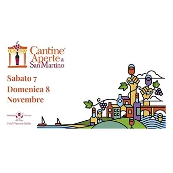

da sab 7 nov a dom 8 nov
Offene Weinkellereien zu Sankt Martin 2026
Entdecken Sie die Offenen Weinkellereien zu Sankt Martin und freuen Sie sich auf ein unvergessliches Erlebnis in der goldenen Jahreszeit. Tauschen Sie sich direkt mit den Winzern aus und erfahren Sie aus erster Hand, wie die diesjährige Weinlese verlaufen ist und verkosten Sie…
 Indicazioni
Indicazioni
- Costi e prenotazioni
- Costo non indicato · Prenotazione non indicata
- Programma
- Programma da verificare. Apri la fonte ufficiale per orari e possibili aggiornamenti.
- In caso di maltempo
- Nessuna indicazione specifica pubblicata.
- Note
- Acquisito automaticamente dalla fonte.
L’EVENTO
Descrizione completa
Möchten Sie die Schönheit und die Magie von Cantine Aperte (Tag der offenen Weinkeller) erneut erleben? Verpassen Sie die Verabredung mit Cantine Aperte in San Martino am Samstag, den 7. und und Sonntag:8. November. zwei Tage lang öffnen die Weinkeller des Movimento Turismo del Vino FVG ihre Tore für Besichtigungen und Verkostungen und für önogastronomische Erfahrungen vor dem Hintergrund des eindrucksvollen magischen Farbenspiels der herbstlichen Jahreszeit.
November ist einer der idealen Monate, um unvergessliche Momente in der Welt des Weins zu erleben: die Weinlese ist erst vor kurzem zu Ende gegangen und man kann, den langsamen Rhythmen des Landlebens folgend, entdecken, „wann der Most zu Wein wird“ und dabei die hervorragenden Weine der Region Friaul-Julisch Venetien begleitet von Köstlichkeiten der Saison verkosten.
Descrizione Möchten Sie die Schönheit und die Magie von Cantine Aperte (Tag der offenen Weinkeller) erneut erleben? Verpassen Sie die Verabredung mit Cantine Aperte in San Martino am Samstag, den 7. und und Sonntag:8. November. zwei Tage lang öffnen die Weinkeller des Movimento Turismo del Vino FVG ihre Tore für Besichtigungen und Verkostungen und für önogastronomische Erfahrungen vor dem Hintergrund des eindrucksvollen magischen Farbenspiels der herbstlichen Jahreszeit. November ist einer der idealen Monate, um unvergessliche Momente in der Welt des Weins zu erleben: die Weinlese ist erst vor kurzem zu Ende gegangen und man kann, den langsamen Rhythmen des Landlebens folgend, entdecken, „wann der Most zu Wein wird“ und dabei die hervorragenden Weine der Region Friaul-Julisch Venetien begleitet von Köstlichkeiten der Saison verkosten.
Organizzato da: Movimento Turismo del Vino - Friuli Venezia Giulia info@mtvfriulivg.it
IL PROGRAMMA
Programma e orari
Appuntamenti raccolti dalle fonti elencate. Dove manca un orario, non è ancora disponibile in questa scheda.
Programma pubblicato
- Dal 2026-11-07 al 2026-11-08
INFORMAZIONI UTILI
Prima di partire
- Controllare la fonte prima di partire.
ORGANIZZAZIONE